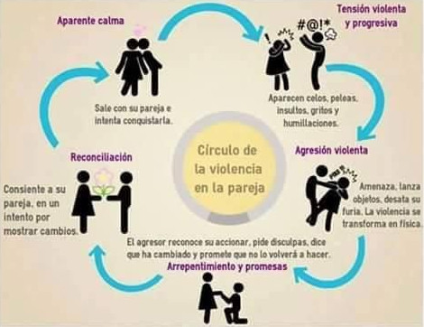
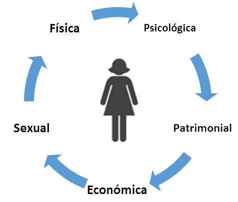
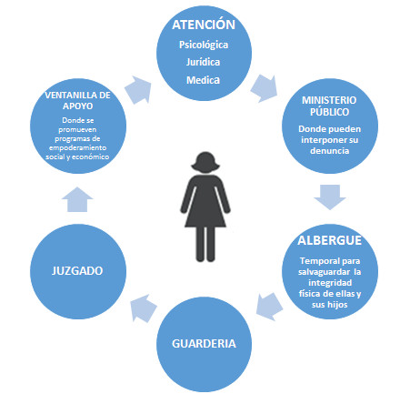

En México se prohíbe la discriminación a las personas, como lo marca nuestra Constitución Mexicana. En materia de violencia de género, se han puesto en marcha diversas políticas públicas, para enfrentar este problema social, buscando fortalecer, respetar los derechos humanos y garantizar el acceso a la justicia de las mujeres que viven violencia en nuestro país.
Este problema social, es un tema mundial como lo ha manifestado ONU Mujeres y diversos organismos internacionales. El marco normativo que se maneja en México para tratar estos temas de violencia hacia las mujeres parte desde la Constitución Política de los Estados Unidos Mexicanos y su normativa en este tema como lo es Ley General de Acceso a las Mujeres a una Vida Libre de Violencia, homologada al Código Penal Federal.
La Ley General de Acceso de las Mujeres a una Vida Libre de Violencia, publicada en el Diario Oficial de la Federación en 2007, tiene la finalidad de prevenir, sancionar y erradicar la violencia contra las mujeres. Así como, garantizar su acceso a una vida libre de violencia que favorezca su desarrollo y bienestar, conforme a los principios de igualdad y de no discriminación.
Con esta ley se pretende garantizar la prevención, la atención, la sanción y la erradicación de todos los tipos de violencia contra las mujeres durante su ciclo de vida, para promover su desarrollo Integral y su plena participación en todas las esferas de su vida.
En Torreón la población femenina es de 359,137 mujeres (51.28% del total de los habitantes, CONAPO proyección 2016). De ellas 268,951 son mayores de 15 años, la estadística nacional menciona que el 63% es susceptible de vivir algún incidente de cualquier tipo de violencia, lo que representa en nuestra ciudad a 169,440 mujeres. De estas 106,391 se encuentran en las categorías de edades jóvenes y medianas (15 a 44 años), que son las más expuestas.
Panorama en México
De acuerdo a la ONU (1993) violencia contra la mujer es "todo acto de violencia basado en la pertenencia al sexo femenino que tenga o pueda tener como resultado un daño o sufrimiento físico, sexual o psicológico para la mujer, inclusive las amenazas de tales actos, la coacción o la privación arbitraria de la libertad, tanto si se producen en la vida pública como en la privada".
Las agresiones psicológicas, físicas o verbales, que un hombre infringe a una mujer, tenga una parentesco familiar, relación sentimental, laboral o sin relación alguna, se pueden dar en el ámbito público como en el privado, generalmente son relacionados al género con la intención de afectar sus derechos humanos y valores. El problema repercute en varios entornos: el social, la salud pública, económico etc.
A nivel nacional de acuerdo a datos de INEGI 2011, de cada 100 mujeres de 15 años y más, 63 declararon haber padecido algún incidente de violencia ya sea por parte de su pareja o de cualquier otra persona.
La violencia de pareja está más extendida entre mujeres que se casaron o unieron antes de los 18 años (52.9%) y menor en las mujeres que lo hicieron a los 25 o más (43.4%). Las mujeres que se encuentran más expuestas a violencia de pareja o de cualquier otro agresor son las jóvenes cuyas edades oscilan entre los 20 y 39 años. De las cuales, 68 de cada 100 han enfrentado al menos un episodio de violencia o abuso.
El estudio: La Violencia Feminicida en México Aproximaciones y Tendencias 1985-2014, SEGOB, INMUJERES y ONU Mujeres Abril 2016; publica datos nacionales sobre "defunciones femeninas con presunción de homicidio" (DFPH). Los ámbitos donde se presenta este delito de 1985-2007 son los ocurridos en la vía pública seguida por el hogar, podemos observar un incremento en el periodo entre 2008 y 2012, siendo la vía pública el punto más alto de la gráfica. En 2014 la reducción es considerable, así como el aumento de las DFPH ocurridas en el hogar.
Acceso a la justicia
Parte de la problemática es el desconocimiento de las mujeres sobre cómo identificar la violencia, conocer sus derechos, romper el círculo vicioso, compuesto por: tensión o conflictos, agresión o acto violento, seguido por arrepentimiento y reconciliación.
En este marco desde 2010 se ha puesto en marcha como política pública un modelo de atención integral que garantice una atención idónea y oportuna ante actos de violencia a las mujeres, con la implementación de los Centros de Justicia para las Mujeres, donde se trabaja basados en dos frentes: el acceso a la justicia y la prevención de la violencia, brindando atención a la víctima, desde el empoderamiento y seguimiento para erradicar la violencia.
De acuerdo a SEGOB, INMujer y ONU Mujeres queda mucho trabajo por hacer en los tres niveles de gobierno, recomendaciones que van desde; homologar en el ámbito local todos los tipos de violencia hacia las mujeres, contemplados en la LGAMVL como en el Código Penal Federal, estandarizar los protocolos de actuación de instituciones de procuración e impartición de justicia, para investigar todas las muertes violentas de mujeres y reducir la impunidad, así como, mejorar la prestación de servicios y atención para mujeres y niñas víctimas de violencia y atender las recomendaciones de diversos organismos internacionales especializados en sentencias y derechos humanos.
Los efectos de la violencia de acuerdo a la OMS pueden ser de dos tipos: No Mortales y Mortales
Efectos NO Mortales
- Lesiones Físicas.
- Trastornos crónicos.
- Salud Mental.
- Comportamientos negativos.
Efectos Mortales
- Homicidio.
- Suicidio.
- Enfermedades de transmisión sexual.
- Mortalidad Materna.
Fuente OMS.
Círculo de la Violencia

Ruta de atención:
- Busca ayuda: No estas sola.
- Denuncia: La violencia contra las mujeres es delito.
- Exige: La violencia contra las mujeres no tiene horarios.
Fuente: CONAVIM.
Tipos de Violencia de Género

Cualesquiera otras formas análogas de violencia que lesionen o sean susceptibles de dañar la dignidad, integridad o libertad de las mujeres.
Ley de Acceso de las Mujeres a una Vida Libre de Violencia (LGAMVLV):
- Tiene la finalidad de prevenir, sancionar y erradicar la violencia contra las mujeres
- Así como, garantizar su acceso a una vida libre de violencia que favorezca su desarrollo y bienestar conforme a los principios de igualdad y de no discriminación.
Modelo de Centro de Justicia para la Mujer

Fuente: CONAVIM.
- Los Centros de Justicia para la Mujer (CJM), operan desde 2010 buscan conjuntar en una sola instancia, servicios para atender a las mujeres violentadas. En la ciudad de Torreón opera un CJM.
- Anteriormente la mujer violentada tenia que recurrir a diversas dependencias para ser atendida.